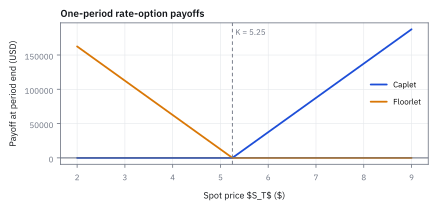
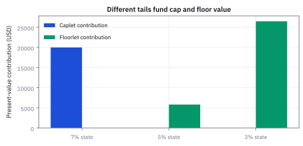
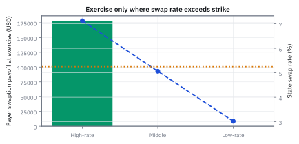
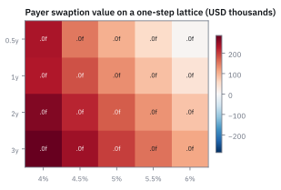
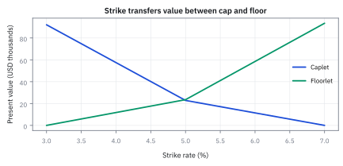

20.4 Caps, Floors, and Swaptions on the Lattice
นำ payoff ของ rate option วางบน reset หรือ exercise nodes แล้วส่งมูลค่ากลับด้วย tree ที่ calibrate แล้ว
คุณกู้เงินและดอกเบี้ยถูกรีเซ็ตทุก 6 เดือน. ถ้าอัตราเกิน 5% คุณอยากมีคนช่วยจ่ายเฉพาะส่วนเกิน; ถ้าไม่เกินก็ไม่อยากจ่ายค่าเคลม. สิทธิ์นี้ควรมีราคาเท่าไร?
เริ่มจากงวดเดียว: ดูอัตราในแต่ละทางของ tree แล้วนับเงินเฉพาะส่วนที่เกินเส้น. สิทธิ์กันดอกเบี้ยพุ่งนี้เรียก caplet; สิทธิ์กันดอกเบี้ยตกเรียก floorlet.
เฉลย: ไม่ได้จ่ายตามอัตราเฉลี่ย แต่จ่ายเฉพาะ node ที่เกิน strike แล้ว discount กลับมา. สิทธิ์เลือกเริ่ม swap ในอนาคตเรียก swaption. cap คือร่มที่กางเมื่อฝนเกินระดับ ไม่ใช่การหยุดเมฆ.
เครื่องมือและสิทธิที่ต้องแยกให้ออก
- cap
- ชุดของ caplets หลายงวดที่จ่ายเมื่อ reference rate สูงกว่า strike ใช้จำกัดต้นทุน floating-rate borrowing ตลอด horizon
- caplet
- option ของ accrual period เดียวที่ payoff ถูกกำหนดจาก rate ณ reset และจ่ายที่ period end ใช้เป็นหน่วยย่อยในการตั้งราคา cap
- floor
- ชุดของ floorlets ที่จ่ายเมื่อ reference rate ต่ำกว่า strike ใช้สร้างขั้นต่ำของ floating income หรือป้องกันรายรับลดลง
- floorlet
- option ของงวดเดียวที่จ่ายส่วนต่างเมื่อ reset rate ต่ำกว่า strike ใช้เป็นหน่วยย่อยของ floor
- swaption
- option ที่ให้สิทธิเข้าสู่ interest-rate swap ตาม strike และ expiry ที่กำหนด ใช้ hedge rate ของ financing หรือรับ exposure ต่อ rate volatility
- payer swaption
- สิทธิเข้าสู่ pay-fixed receive-floating swap ใช้ป้องกันหรือเก็งกำไรต่อการที่ market swap rate สูงกว่า strike
- receiver swaption
- สิทธิเข้าสู่ receive-fixed pay-floating swap ใช้ป้องกันหรือเก็งกำไรต่อการที่ market swap rate ต่ำกว่า strike
- strike rate
- fixed rate ที่ระบุใน option contract ใช้เป็น threshold สำหรับ caplet และเป็น fixed rate ของ underlying swap
- intrinsic value
- มูลค่าจากการใช้สิทธิทันทีโดยไม่รวมเวลาที่เหลือ ใช้เปรียบเทียบกับ continuation value ใน American-style exercise
- continuation value
- discounted risk-neutral value ของการยังไม่ใช้สิทธิและถือ option ต่อ ใช้ตัดสิน exercise บน lattice
- exercise date
- วันที่ผู้ถือมีสิทธิเลือกเข้าสู่ underlying swap ใช้ระบุ layer ที่วาง swaption payoff
- settlement
- วิธีชำระผลของ option เช่น physical entry เข้าสู่ swap หรือ cash amount ใช้กำหนด payoff และ annuity convention
- volatility smile
- รูปแบบที่ implied volatility เปลี่ยนตาม strike ใช้สะท้อนว่าการกระจายตลาดไม่ตรงกับ one-factor lognormal หรือ normal assumption เดียว
- positive part
- function ที่เลือกค่ามากกว่าระหว่างตัวแปรกับศูนย์ ใช้ทำให้ option payoff ไม่ติดลบแก่ผู้ถือ
สัญกรณ์และหน่วยของ rate options
| สัญลักษณ์ | ความหมาย | หน่วย |
|---|---|---|
| $N$ | notional ที่ใช้คำนวณดอกเบี้ยและ payoff | USD |
| $T_i$ | reset date ต้นงวดของ caplet ลำดับที่ $i$ | ปี |
| $T_{i+1}$ | payment date ปลายงวด | ปี |
| $\delta_i$ | accrual year fraction ของงวด | ปี |
| $L_i$ | reference rate ที่ fix ณ $T_i$ สำหรับงวดถัดไป | ต่อปี |
| $r_j$ | อัตราดอกเบี้ยระยะสั้น ณ สถานะ $j$ ตอนใช้สิทธิ์ ในตัวอย่างที่กำหนดให้ทุก node ชั้นเดียวกันมีค่าเท่ากัน | ต่อปี |
| $K$ | strike rate | ต่อปี |
| $Q_{n,j}$ | Arrow-Debreu state price ถึง option node | USD วันนี้ต่อ USD ที่ node |
| $P(T_i,T_{i+1})$ | discount factor จาก reset node ถึง payment date | USD ณ reset ต่อ USD ณ payment |
| $S_j$ | par rate ของ underlying swap ณ exercise state $j$ | ต่อปี |
| $A_j$ | underlying swap annuity ณ exercise state | ปี |
| $V_0^{caplet}$ | caplet present value วันนี้ | USD |
| $V_0^{pay}$ | payer swaption present value วันนี้ | USD |
| $\Pi_j$ | option payoff ใน state $j$ ณ payment หรือ exercise date | USD |
| $x^+$ | positive part เท่ากับค่ามากกว่าระหว่าง $x$ กับศูนย์ | ตามหน่วยของ $x$ |
ที่มาที่ไป: สิทธิ์ที่ผูกกับอัตราดอกเบี้ย ไม่ใช่กับราคาหุ้น
บริษัทที่กู้เงินด้วยอัตราลอยตัวมีความกังวลข้อเดียว คือถ้าอัตราขึ้นแรงจะจ่ายไม่ไหว แต่ก็ไม่อยากล็อกเป็นอัตราคงที่ เพราะจะเสียโอกาสถ้าอัตราลง
ความต้องการนั้นตรงกับนิยามของสิทธิ์พอดี คือจ่ายเงินก้อนหนึ่งวันนี้ เพื่อได้รับการชดเชยเฉพาะเมื่ออัตราขึ้นเกินเกณฑ์
ผลิตภัณฑ์ที่ตอบความต้องการนี้กลายเป็นสินค้ามาตรฐานของธนาคารทุกแห่ง
การตั้งราคามันมีรายละเอียดที่พลาดง่ายกว่าสิทธิ์บนหุ้น คืออัตราถูกกำหนดวันหนึ่งแต่จ่ายเงินอีกวันหนึ่ง การลืมคิดลดช่วงที่คั่นกลางเป็นความผิดพลาดที่พบบ่อยที่สุดในเรื่องนี้
วางนาฬิกาของเงินสดก่อนวางสูตร
เริ่มจากเงินกู้ 10 ล้าน USD. ปี 1 เป็นวันดูอัตราเพื่อ reset แต่เงินงวดครึ่งปีจ่ายจริงปี 1.5; วาดสองวันนี้แยกกันก่อน เพราะสลับแล้ว payoff จะเร็วผิด 6 เดือน.
ถ้าอัตราเกิน strike 5.25% caplet จ่ายส่วนเกิน. floorlet กลับทิศ. tree ให้ state rate 7%, 5%, 3% และ state price 0.236621287, 0.475620657, 0.238999370 เพื่อถ่วงเงินจากแต่ละทางกลับวันนี้.
swaption คือสิทธิ์เลือกเริ่ม swap ในปี 1. ก่อนใส่ premium delay หรือ smile เราทำ toy case นี้ให้ตอบได้จบก่อน.
แยกอัตราบน tree ออกจากอัตราบนใบเสร็จ
ตัวอย่าง caplet ต่อไปกำหนดสัญญาจำลองให้ coupon อ้าง rate บน tree โดยตรง คือ L เท่ากับ r และจ่าย notional คูณอัตราคูณครึ่งปี ส่วน discount ใช้ exponential นี่เป็นกติกาที่ตั้งขึ้นเพื่อแยกสองเวลาของเงิน ไม่ใช่ caplet ตลาดที่อ้าง simple forward
หากสัญญาอ้าง simple forward ที่สอดคล้องกับ curve เดียว ต้องแปลงจากราคาของหนึ่ง USD ตามสองบรรทัดแรกก่อน ที่ node 7% จะได้อัตรา 7.12394% และ payoff 93,697.09 USD ซึ่งต่างจาก 87,500 ต้องเปลี่ยนทุก node พร้อมกัน ไม่ใช่เปลี่ยนเฉพาะตัวเลขที่ดูใกล้กัน
swaption ด้านล่างใช้ par swap rate จากราคาของ cash flows จึงได้ 7.12394% ที่ node บนตามกติกาของ swap อยู่แล้ว แยกอัตราที่สัญญาใช้จ่ายจากอัตราที่ใช้คิดลดทุกครั้ง
ขั้นที่ 1 — นิยามของเงินที่ caplet จ่าย และจ่ายเมื่อไร
บรรทัดนี้เป็น นิยาม ของสัญญา ไม่ใช่ผลที่พิสูจน์ อ่านจากในออกนอก: ส่วนที่อัตราสูงเกินเกณฑ์ เก็บเฉพาะเมื่อเป็นบวก เพราะเป็นสิทธิ์ ไม่ใช่ภาระ คูณสัดส่วนของปีในงวดนั้น เพื่อแปลงอัตราต่อปีเป็นอัตราของงวด แล้วคูณเงินต้นเพื่อให้ได้จำนวนเงิน จุดที่ต้องจำคือดัชนีเวลา: อัตราถูกกำหนดที่ต้นงวด แต่เงินจ่ายที่ปลายงวด ซึ่งเป็นสาเหตุของความผิดพลาดที่ขั้นที่ 3 จะเตือน
rate ส่วนเกินมีหน่วยต่อปี คูณ accrual ปีแล้วไม่มีหน่วย จากนั้นคูณ notional USD จึงได้ payoff USD ที่ปลายงวด
ขั้นที่ 2 — นิยามของ floorlet: ด้านตรงข้ามของ caplet
บรรทัดนี้เป็น นิยาม ของสัญญาอีกฝั่ง ไม่ใช่ผลที่พิสูจน์ รูปเหมือนขั้นที่ 1 ทุกอย่าง ต่างแค่สลับว่าใครลบใครในวงเล็บ จึงจ่ายเมื่ออัตราต่ำกว่าเกณฑ์ แทนที่จะสูงกว่า การเขียนสองสัญญาให้มีรูปเดียวกันแบบนี้ไม่ใช่เรื่องความสวยงาม มันคือสิ่งที่ทำให้ขั้นที่ 6 หาความสัมพันธ์ระหว่างสองอันได้ในสองบรรทัด
floorlet กลับด้าน threshold จาก caplet และจ่ายเมื่อ reset rate ต่ำกว่า strike
แล้วเอาไปใช้ทำอะไรได้จริงบ้าง
การตั้งราคาสิทธิ์บนอัตราดอกเบี้ย เป็นตลาดที่ใหญ่มากและใช้ทุกวันในการบริหารความเสี่ยง
ใช้ตั้งราคาสัญญาที่จำกัดเพดานดอกเบี้ยให้ผู้กู้ ซึ่งเป็นผลิตภัณฑ์มาตรฐานของธนาคาร
ใช้ตั้งราคาสิทธิ์ที่จะเข้าทำสัญญาแลกเปลี่ยนในอนาคต
ใช้ตรวจราคาด้วยความสัมพันธ์ระหว่าง cap กับ floor ซึ่งต้องเป็นจริงเสมอ
ภาพที่ 1 — caplet กับ floorlet ประกบกันที่ strike

caplet เริ่มจ่ายเหนือ 5.25% ส่วน floorlet เริ่มจ่ายต่ำกว่า 5.25% ความชันเท่ากันคนละทิศเพราะ notional กับ accrual เหมือนกัน
ขั้นที่ 3 — ราคา caplet จาก state prices ถึง reset date
มีจุดที่พลาดง่ายมากอยู่ตรงนี้ อัตราถูกกำหนดที่วันหนึ่ง แต่จ่ายเงินอีกวันหนึ่ง สามบรรทัดนี้แยกการคิดลดสองช่วงออกจากกันให้ชัด ช่วงแรกอยู่ในราคาของการไปถึง state ส่วนช่วงที่สองต้องใส่เพิ่มด้วยมือ
จุดที่พลาดง่ายที่สุดของหัวข้อนี้คือสองวันไม่ตรงกัน อัตราถูกกำหนดที่เวลา 1 แต่เงินจ่ายที่เวลา 1.5
จึงต้องคำนวณมูลค่า ณ วันที่รู้อัตราแล้วก่อน payoff รู้ค่าแน่นอนตอนนั้น แต่ยังไม่ได้เงิน ก้อน $P(1,1.5;r_j)$ คือตัวคิดลดจากวันจ่ายกลับมาวันรู้อัตรา ซึ่งใช้อัตราของ state นั้นเอง ไม่ใช่อัตราวันนี้
แล้วส่งมูลค่ากลับมาวันนี้ด้วยราคาของการไปถึงแต่ละ state จากหัวข้อ 20.3 ซึ่งรวมทั้งโอกาสและการคิดลดช่วงแรกไว้แล้ว
การลืมตัวคิดลดตัวแรกจะให้ราคาสูงเกินไปอย่างเป็นระบบ ไม่ใช่สูงบ้างต่ำบ้าง ซึ่งเป็นความผิดพลาดชนิดที่มองไม่เห็นจนกว่าจะเทียบกับตลาด
ตัวอย่าง caplet และ floorlet บนสาม exercise states
ของที่มี: notional \$10,000,000, accrual 0.5 ปี, strike 5.25% และ rate nodes 7%, 5%, 3%; เงินจ่ายจริงปี 1.5. เริ่ม node 7%: อัตราเกิน strike 1.75% จึงได้ caplet payoff 87,500 USD.
คำตอบ: caplet วันนี้มีมูลค่า \$19,992.24 และ floorlet วันนี้ \$32,285.60.
ตรวจเองใน 10 วินาที: node 5% และ 3% ของ caplet ต้องจ่ายศูนย์ เพราะไม่เกิน strike.
เอาไปใช้จริง: ใช้ราคา cap/floor แยกความเสี่ยง rate reset ของเงินกู้ ก่อนรวมหลายงวดเป็น cap ทั้งสัญญา.
ตัวเลข caplet และ floorlet ชุดนี้เป็นสัญญาจำลองที่กำหนด coupon rate ให้เท่ากับ short-rate node โดยตรง ถ้าสัญญาจ่ายตาม simple forward ที่อนุมานจาก discount factor ต้องใช้ L ที่คำนวณในตัวอย่างเปิดเรื่อง และจะได้ราคาอีกชุดหนึ่ง
ขั้นที่ 4 — caplet present value แบบไม่ข้าม discounting
แทนตัวเลขจริงโดยไม่ข้ามขั้นคิดลดช่วงที่สอง ซึ่งเป็นความผิดพลาดที่พบบ่อยที่สุด
มีเพียง high-rate state ที่ caplet จ่าย การคูณทั้ง state price และ node discount ถูกต้องเพราะ state price สิ้นสุดที่ reset แต่ payoff จ่ายอีกครึ่งปี
ขั้นที่ 5 — floorlet present value จากสอง states
floorlet จ่ายเมื่ออัตราต่ำกว่า strike สร้าง payoff ของแต่ละ node ก่อน แล้วค่อยคูณ state price กับตัวคิดลดจาก reset date ไปถึง payment date
node บนไม่จ่ายอะไรเลย เพราะอัตรา 7% สูงกว่า strike 5.25% floorlet จึงหมดค่าในสถานะนั้น
node ล่างจ่ายมากกว่า node กลางถึงเก้าเท่า เพราะอัตราหลุดลงไปไกลกว่า strike มาก และนั่นคือที่มาของมูลค่าเกือบทั้งหมด
ภาพที่ 2 — node contribution บอกว่า option value มาจาก state ไหน

caplet ทั้งหมดมาจาก 7% state ขณะที่ floorlet ส่วนใหญ่จาก 3% state การรายงานเพียงราคาเดียวซ่อน tail state ที่เป็นต้นกำเนิดของ risk
ลองหักสองสิทธิในสามกรณี
เมื่ออัตราเกิน strike มีแต่ caplet จ่าย เมื่อต่ำกว่ามีแต่ floorlet จ่าย การซื้อ caplet และขาย floorlet จึงให้ส่วนต่างอัตราเส้นตรงทุกกรณี
คูณ notional และช่วงคิดดอกเบี้ยเดียวกัน แล้วคิดลดวันจ่ายเดียวกัน จึงตรวจ parity ได้ทั้งระดับ payoff และราคา ถ้าวันจ่ายหรืออัตราอ้างอิงต่างกัน การลบนี้ใช้ไม่ได้
ขั้นที่ 6 — cap-floor parity ของหนึ่งงวด
มีความสัมพันธ์ที่ตรวจงานได้ฟรี คือสองสัญญานี้ลบกันแล้วเหลือสัญญาธรรมดา ห้าบรรทัดนี้เป็นกลวิธีเดียวกับหัวข้อ 13.4 ทุกประการ คือไล่สองกรณีตอนจบ และเพราะไม่ใช้แบบจำลอง มันจึงยังจริงแม้แบบจำลองจะผิด
ลบสอง payoff ของขั้นที่ 1 และ 2 แล้วดึงตัวร่วมออกมา จากนั้นไล่ทุกกรณีที่เป็นไปได้ ซึ่งมีแค่สองกรณี
อัตราสูงกว่าเกณฑ์ ตัวแรกจ่ายส่วนต่าง ตัวที่สองไม่จ่าย อัตราต่ำกว่าเกณฑ์ ตัวแรกไม่จ่าย ตัวที่สองจ่าย และเครื่องหมายลบข้างหน้าทำให้ผลออกมาเป็นส่วนต่างที่ติดลบพอดี สองกรณีจึงให้ผลเดียวกัน
ซื้อตัวหนึ่งขายอีกตัวหนึ่ง จึงได้ผลเหมือนสัญญาแลกอัตราธรรมดา ซึ่งตั้งราคาได้โดยไม่ต้องใช้แบบจำลองความเหวี่ยงเลย
ประโยชน์คือใช้ตรวจว่าโค้ดตั้งราคาและเครื่องหมายถูกต้องหรือไม่ โดยไม่ต้องเชื่อแบบจำลอง เป็นการตรวจชนิดเดียวกับ put-call parity ในหัวข้อ 13.4
ที่มาทีละขั้น — จาก Cap-Floor Parity ไปสู่มูลค่าของ Interest Rate Swap
ความสัมพันธ์ Cap-Floor-Swap Parity ช่วยเชื่อมโยงตลาด option เข้ากับตลาด swap โดยตรง หากราคาของ cap และ floor ในตลาดไม่สอดคล้องกับ swap rate ผู้ค้าสามารถสร้าง portfolio ที่ไร้ความเสี่ยงเพื่อทำกำไร arbitrage ได้ทันที
เงื่อนไขนี้จึงเป็นเกณฑ์ตรวจสอบพื้นฐาน (sanity check) ที่ model บน lattice ทุกตัวต้องผ่านก่อนนำไปใช้ตั้งราคาตราสารที่ซับซ้อนขึ้น
เมื่อรวม caplet และ floorlet ทุกงวดเข้าด้วยกัน ผลต่างของมูลค่า cap และ floor ทั้งฉบับจะเท่ากับผลรวมของกระแสเงินสด forward rate ลบด้วยอัตราคงที่คิดลดกลับมาวันนี้
ผลรวมนี้ตรงกับมูลค่าของสัญญา swap ฝั่งจ่ายคงที่รับลอยตัว (pay-fixed swap) พอดี แปลว่าการซื้อ cap ควบคู่กับการขาย floor ที่ strike เดียวกัน ให้สถานะเทียบเท่ากับการทำ swap ทุกประการ
หากเลือก strike เท่ากับ par swap rate มูลค่าเริ่มต้นของ swap จะเป็นศูนย์พอดี ส่งผลให้ราคาของ cap และ floor ต้องเท่ากันเป๊ะ นี่คือบททดสอบความถูกต้องของ model ที่ห้ามละเลย
ก่อนเรียกสิทธิ์ ต้องตีราคาใบเสร็จทั้งชุด
swap ไม่ได้ดูดอกเบี้ยเลขเดียว. มันแลกใบเสร็จหลายวันจ่าย. ที่ exercise state จึงต้องสร้าง discount factor ของทุกเงินที่เหลือก่อน.
รวมค่าเหล่านั้นเป็น annuity แล้วหา par swap rate. payer swaption มีค่าเมื่อ rate ตลาดสูงกว่า strike เพราะมันล็อก fixed rate ที่ต่ำกว่า. receiver กลับทิศ.
swaption ไม่ได้เลือกเลขดอกเบี้ยหนึ่งตัว; มันเลือกเข้าไปในตารางใบเสร็จทั้งเล่ม.
ขั้นที่ 7 — นิยามของ payoff ที่ swaption จ่าย ณ วันใช้สิทธิ์
สองก้อนนี้เป็น นิยาม ของสัญญา ไม่ใช่ผลที่พิสูจน์ ความต่างจาก cap อยู่ที่จำนวนครั้งที่ตัดสินใจ: cap ตัดสินใจใหม่ทุกงวด ส่วนสัญญานี้ตัดสินใจครั้งเดียวกับ swap ทั้งอัน ก้อน annuity ข้างหน้ามีหน้าที่แปลงส่วนต่างของอัตรา ให้เป็นมูลค่าเงิน ณ วันใช้สิทธิ์ เพราะส่วนต่างนั้นจะถูกจ่ายหลายงวดในอนาคต ไม่ใช่จ่ายก้อนเดียว ขั้นถัดไปจะคำนวณสองก้อนนั้นออกมาเป็นตัวเลข
annuity แปลง rate difference เป็น present value ณ exercise ก่อน state prices จะส่งค่ากลับวันนี้
ขั้นที่ 8 — สร้าง annuity และ par rate เมื่อ curve หลัง exercise แบน
จะรู้ว่าใช้สิทธิ์คุ้มไหม ต้องรู้ก่อนว่า ณ วันนั้น อัตราของ swap เป็นเท่าไรในแต่ละ state หกบรรทัดนี้นำสูตรของหัวข้อ 20.2 มาใช้ซ้ำทั้งดุ้น ไม่มีอะไรใหม่ เพิ่มมาแค่ข้อสมมติเรื่องเส้นแบนในบรรทัดแรก ซึ่งต้องจำไว้ว่าเป็นการทำให้ง่าย
ข้อสมมติที่ทำให้คำนวณด้วยมือได้อยู่บรรทัดแรก หลังวันใช้สิทธิ์ ถือว่าอัตราแบนที่ค่าของ state นั้น ของจริงไม่แบน แต่สำหรับตัวอย่างนี้พอ
มีสองงวดห่างกันครึ่งปี บวกสองงวดตามนิยามของ annuity ในหัวข้อ 20.2 แต่ละงวดคือสัดส่วนของปีคูณตัวคิดลดของงวดนั้น
จากนั้นยกเงื่อนไขของหัวข้อ 20.2 มาใช้ คืออัตราที่ทำให้สองขาเท่ากัน แล้วแทนผลของขั้นที่ 3 ของหัวข้อนั้น ซึ่งบอกว่าขาลอยตัวเท่ากับหนึ่งลบตัวคิดลดสุดท้าย
หารออกมาได้อัตราที่จะเอาไปเทียบกับราคาใช้สิทธิ์ในขั้นที่ 7 สังเกตว่าไม่มีอะไรใหม่ในขั้นนี้เลย ทุกชิ้นส่วนมาจากหัวข้อ 20.2 ทั้งหมด
ขั้นที่ 9 — ค่าของสาม states และ payer swaption
รวม payoff ของทุก state ด้วย state prices ได้ราคาวันนี้
เฉพาะ high-rate state ใช้สิทธิ payer swaption และ payoff อยู่ที่ exercise date แล้วจึงไม่ต้อง node-discount อีกครั้ง
ความสัมพันธ์เชิงอสมการ — ทำไมมูลค่า Swaption จึงไม่เกินผลรวมของ Caplets
ผู้เริ่มต้นมักสงสัยว่าทำไมองค์กรถึงยอมจ่ายเงินซื้อ swaption แทนที่จะซื้อ cap ทั้งที่มีความยืดหยุ่นน้อยกว่า คำตอบอยู่ที่ต้นทุน premium
เนื่องจาก swaption เป็นการตัดสินใจแบบมัดรวมครั้งเดียว อสมการคณิตศาสตร์จึงบังคับให้ราคา swaption ถูกกว่าผลรวมของ caplets เสมอ ผู้กู้เงินที่ต้องการเพียงป้องกันความเสี่ยงระยะยาวจึงเลือก swaption เพื่อประหยัดต้นทุนได้อย่างมีนัยสำคัญ
ความแตกต่างพื้นฐานระหว่าง cap และ swaption อยู่ที่อิสระในการตัดสินใจ ผู้ถือ cap สามารถเลือกใช้สิทธิแยกกันในแต่ละงวดได้โดยอิสระ เมื่องวดใดดอกเบี้ยต่ำก็ปล่อยให้งวดนั้นหมดอายุไป
แต่ผู้ถือ swaption ต้องตัดสินใจเพียงครั้งเดียว ณ วันใช้สิทธิ์ว่าจะเข้าทำสัญญา swap ทั้งฉบับหรือไม่ ซึ่งต้องผูกมัดกับกระแสเงินสดทุกงวดในอนาคตพร้อมกันทั้งงวดที่ได้เปรียบและเสียเปรียบ
ตามอสมการคณิตศาสตร์ ค่าบวกของผลรวมย่อมไม่เกินผลรวมของค่าบวกเสมอ มูลค่าของ swaption จึงต้องต่ำกว่าหรือเท่ากับผลรวมของ caplets เสมอ และส่วนต่างนี้คือราคาของสิทธิในการเลือกแยกงวด
ภาพที่ 3 — exercise decision ของ payer swaption

top state มี swap rate 7.1239% สูงกว่า strike จึง exercise ส่วนอีกสอง states ปล่อยสิทธิหมดค่า หากเป็น American-style ต้องทำการเปรียบเทียบนี้ย้อนกลับทุก eligible layer
ภาพที่ 4 — strike กับ expiry เปลี่ยน payer value พร้อมกัน

one-step lattice proxy นี้ขยาย dispersion ตามรากของ expiry และ revalue ทุก strike อายุยาวหรือ strike ต่ำเพิ่มพื้นที่ state ที่ payer option จ่าย ภาพใช้กลไกเชิงกำหนดเพื่อสอน sensitivity ไม่ใช่ market volatility surface
ภาพที่ 5 — cap และ floor เคลื่อนสวนกันเมื่อ strike เปลี่ยน

เพิ่ม strike ทำให้ caplet ถูกลงและ floorlet แพงขึ้น ส่วนต่างของสองเส้นยังถูกผูกด้วย linear forward value จึงเป็น diagnostic ที่ใช้จับ sign หรือ settlement bug ได้
implementation: ทำให้เวลาต่างกันผิดไม่ได้
เก็บ reset date, payment date และ exercise date แยกกัน. นี่คือ input ที่กันระบบจ่ายเงินผิดวัน.
สร้าง cap จาก caplet ตาม schedule. ที่ exercise node ให้รวม cash flow ที่เหลือเป็นมูลค่า swap แล้วค่อยเลือก exercise หรือถือรอด้วย backward induction.
ตรวจ parity, positivity และราคาเมื่อ time step ถี่ขึ้นก่อนเชื่อ premium. แล้วค่อยรายงาน sensitivity ต่อ curve, volatility และ strike; ราคาเดียวไม่บอกว่าปุ่มไหนทำให้ผลลัพธ์ขยับ.
failure modes และขอบเขตของ model
กับดักคือจ่าย caplet ในวัน reset แทนวันจ่ายจริง. แค่เลื่อนเงิน 6 เดือนก็ทำให้ราคาและ hedge ผิด.
ตรวจ timeline ก่อนตรวจ optimizer: reset วันไหน, payment วันไหน, และ discount กลับจากวันไหน. option ไม่ได้แพงเพราะเครื่องหมายบวกบนสูตร; มันแพงเพราะ downside ถูกตัด แต่ upside ยังมาประชุมครบ.
ข้อจำกัด: วิธีนี้สมมติอะไร และของจริงเป็นอย่างไร
| เรื่อง | วิธีนี้สมมติว่า | ของจริงเป็นอย่างไร | ผลที่ตามมาเวลาใช้งาน |
|---|---|---|---|
| วันจ่ายเงิน | แยก reset ปี 1 กับ payment ปี 1.5 | วันจริงขึ้นกับเอกสารสัญญาและปฏิทิน | ต้องคิดลดสองช่วงแยกกัน ซึ่งเป็นข้อผิดพลาดที่พบบ่อยที่สุดในเรื่องนี้ |
| แบบจำลองเดียว | ต้นไม้เดียวใช้ได้กับทุกสัญญา | ตลาดใช้แบบจำลองต่างกันสำหรับสัญญาต่างชนิด | ราคาที่ได้อาจไม่ตรงกับที่ตลาดเสนอ แม้จะปรับให้ตรงราคาพื้นฐานแล้ว |
| ความผันผวนคงที่ | ความผันผวนของอัตราคงที่ | มันเปลี่ยนตามระดับอัตราและตามอายุ | ต้องปรับให้ตรงกับราคาที่ตลาดเสนอในแต่ละอายุแยกกัน |
แถวแรกเป็นรายละเอียดเล็กที่ทำให้ราคาผิดได้หลายเปอร์เซ็นต์ ถ้าข้ามไป
คำนวณ caplet, floorlet และ payer swaption ซ้ำได้
import numpy as np
Q = np.array([0.23662128698837095, 0.47562065744664594, 0.23899937045827496])
r = np.array([0.07, 0.05, 0.03])
N, delta, K = 10_000_000, 0.5, 0.0525
disc = np.exp(-r*delta)
caplet = np.sum(Q*disc*N*delta*np.maximum(r-K, 0))
floorlet = np.sum(Q*disc*N*delta*np.maximum(K-r, 0))
A = 0.5*np.exp(-0.5*r)+0.5*np.exp(-r)
S = (1-np.exp(-r))/A
payer = np.sum(Q*N*A*np.maximum(S-K, 0))
assert abs(caplet-19_992.244677808125) < 1e-8
assert abs(floorlet-32_285.596776721308) < 1e-8
assert abs(payer-42_080.020156682636) < 1e-8production code ต้องรับ curves, calendars, settlement terms และ volatility calibration จาก market data แล้ว revalue ด้วย bumped inputs เพื่อสร้าง Greeks ที่สอดคล้องกับราคา
ก่อนไปต่อ: continuous-time short-rate models
lattice บอกราคากับจุด exercise ได้ แต่จำนวน node ไม่บอกเองว่า rate ควรดึงกลับเร็วแค่ไหน. หัวข้อถัดไปจึงใช้ Vasicek และ Cox-Ingersoll-Ross (CIR) หา parameter จาก USD curve แล้วแยกให้ชัดว่า curve บอกอะไร และต้องใช้ option เพิ่มตรงไหน.
สรุปที่ใช้ได้จริง
- cap คือผลรวม caplets และ floor คือผลรวม floorlets โดย reset date กับ payment date ต้องแยกกัน
- swaption payoff ใช้ state swap rate คูณ state annuity ไม่ใช่ short rate เพียงตัวเดียว
- ตัวอย่างสัญญาจำลองที่ coupon อ้าง rate บน tree โดยตรงให้ caplet \$19,992.24, floorlet \$32,285.60 และ payer swaption \$42,080.02 บน notional \$10,000,000
- parity, strike monotonicity, zero-vol limit และ lattice convergence เป็น implementation tests ที่ต้องมี
- one-factor lattice ที่ fit curve ยังต้อง calibrate volatility และยอมรับ smile กับ basis model risk